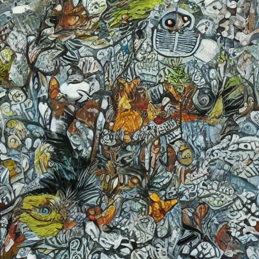

Dự án giúp tạo ra ảnh từ văn bản một cách dễ dàng và nhanh chóng.
Chào mừng bạn đến với dự án "Sinh ảnh từ văn bản". Đây là một dự án đơn giản nhưng mạnh mẽ, cho phép bạn tạo ra các hình ảnh độc đáo từ văn bản của mình.
Ứng dụng này được xây dựng với mục đích cung cấp một cách dễ dàng và thuận tiện để chuyển đổi các ý tưởng và câu chuyện của bạn thành hình ảnh đẹp mắt.
Bạn có thể tận dụng các tính năng của ứng dụng như lưu ảnh và tải về để chia sẻ với bạn bè và đồng nghiệp.
Trong dự án này, chúng tôi sử dụng các thư viện và model sau:
Để sử dụng dự án, bạn cần nhập văn bản muốn tạo thành ảnh vào trang web. Sau đó, nhấn nút "Tạo ảnh" và bạn sẽ nhận được ảnh tương ứng với văn bản đó.
Có thể lưu ảnh được tạo ra bằng cách nhấn nút "Lưu ảnh".
Ảnh khi được tạo ra có thiên hướng theo bức tranh màu nước.
Dưới đây là một sản phẩm demo minh họa về cách sử dụng dự án:
